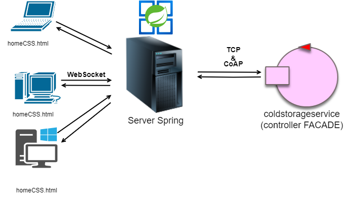
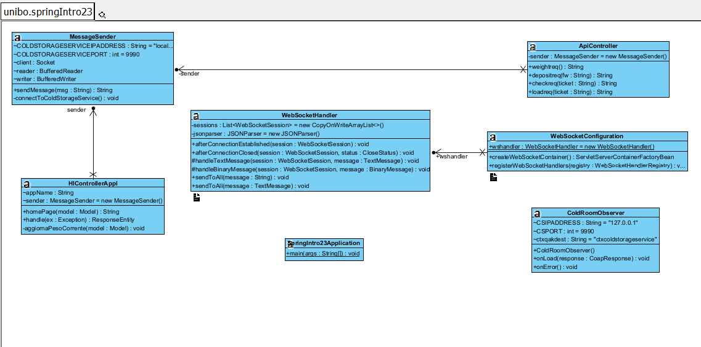

Cold Storage Service: Sprint2
Introduzione
In questa fase ci concentreremo sui requisiti riguardanti la ServiceAccessGUI analizzati nello
Requisiti
Requisiti del TemaFinale23In particolare, ci concentreremo sull'analisi e progettazione delle entità coinvolte nella catena "richiesta di deposito - verifica ticket - load done".
Analisi dei requisiti
Il componente che dovrà essere realizzato in questo Sprint dovrebbe inviare le varie richieste (messe a disposizione per i driver nella GUI) al ColdStorageService tramite protocollo TCP.Supponiamo che il driver non menta sul peso dichiarato nella
Come punto di partenza della realizzazione di questo componentem, rispettiamo i messaggi definiti nello sprint precedente con la differenza che la ServiceAccessGUI non è più un MOCK ma un attore esterno al contesto.
Architettura Logica del Progetto dello Sprint1
Riportiamo di seguito l'immagine dell'Architettura Logica dello Sprint1, come base di partenza per la realizzazione di questo Sprint:
Analisi del Problema
Realizzeremo la GUI non più come un simulatore e come attore interno ma come unLe richieste ajax provenienti dai client verranno inoltrate tramite socket.
Potremmo usare il protocollo
Ragioni:
- Il protocollo CoAP è già fortemente supportato da QAK;
- Non c'è bisogno di fare polling costante, permettendoci di ridurre l'overhead;
Progettazione e sviluppo
SPRING
Progettare le GUI come attori non è ottimale, dobbiamo progettarla come un
Per fare ciò ci appoggiamo alla tecnologia di SPRING che permette l'interazione tramite web e la gestione di molti utenti collegati contemporaneamente.
Nello schema iniziale il server Spring prenderà quindi il posto dell'attore ServiceAccessGUI, l'interazione con l'utente avverrà tramite pagine html fornite dal server ad ogni utente che si collega.

Come da analisi del problema, gli eventi dell'attore ColdRoomManager verranno osservati tramite
Gli eventi degli attori verranno inoltrati ai client di Spring tramite websocket (create all'inizio di ogni sessione).
Ogni volta che cambiano le label di currentweight e di freespace all'interno dell' attore ColdRoomManager si inviano aggiornamenti ai client Spring tramite la funzione UpdateResource supportata dal linguaggio .qak .
Definizione messaggi e contesti
System coldstorageservice
//MESSAGGI
//serviceaccessGUI -> coldstorageservice
Request getweight : getweight(NO_PARAM)
Reply currentweight : currentweight(CurrentWeight,FreeSpace) for getweight
Request storerequest : storerequest(TruckLoad)
Reply loadaccepted : loadaccepted(Ticket,FreeSpace,CurrentWeight) for storerequest
Reply loadrejected : loadrejected(_) for storerequest
Request verifyticket : verifyticket(TruckTicket)
Reply chargetaken : chargetaken(_) for verifyticket
Reply invalidticket : invalidticket(REASON) for verifyticket
Request loaddone : loaddone(TruckTicket)
Reply goaway : goaway(_)for loaddone
Reply depositfailed : depositfailed(_) for loaddone
//------------------------------------------------------------
...
//------------------------------------------------------------
//CONTESTI
Context ctxcoldstorageservice ip [host="localhost" port=9990]
Context ctxbasicrobot ip [host="127.0.0.1" port=8020]
//------------------------------------------------------------
Link del modello .qak: ColdStorageSprint2.qak
Abilitazione/disabilitazione pulsanti della GUI
Azioni dei PulsantiAll'interno di dinamic.js viene definita la funzione enablebuttons per gestire lo stato dei pulsanti in base a diversi scenari all'interno dell'applicazione, consentendo di abilitare o disabilitare i pulsanti in modo dinamico in base allo stato corrente del sistema.
Riportiamo di seguito lo snippet di dinamic.js che realizza l'abilitazione e la disabilitazione dei vari pulsanti:
function enableButtons(mode){
switch(mode){
case"requestaccepted":
document.getElementById("checkbutton").removeAttribute("disabled");
break;
case "ticketaccepted":
document.getElementById("checkbutton").setAttribute("disabled", "disabled");
document.getElementById("loadbutton").removeAttribute("disabled");
break;
default:
document.getElementById("checkbutton").setAttribute("disabled", "disabled");
document.getElementById("loadbutton").setAttribute("disabled", "disabled");
}
checkbutton : Viene abilitato solo a seguito di una storerequest avvenuta con successo.
Viene disabilitato dopo aver inviato una sola volta la richiesta di verifyticket e dopo aver ricevuto la conferma da parte del service che il ticket è valido ovvero quando si riceve un chargetaken (ticket valido). Questo pulsante viene disabilito per evitare di mandare due volte una richiesta di verifyticket sullo stesso ticketloadbutton : Viene abilitato solo a seguito di una verifyticket avvenuta con successo e disabilitato in tutti gli altri casi.
Questo pulsante viene disabilitato per evitare di mandare più volte la richiesta di loaddone al tranpsorttrolley
Spring Server: socket e osbserver
Il server si collegherà agli attori tramite socket o come coapObserver.
Le richieste ajax provenienti dai client verranno inoltrate tramite socket.
Il server è composto di un ApiController.java che sfrutta
la classe MessageSender.java per inviare messaggi.
Lato client rendiamo le pagine dinamiche tramite ApiController.java
tramite l'annotazione
Di seguito riportiamo uno snippet riguardante la classe ApiController.java che sfrutta la classe MessageSender.java per inviare una richiesta di storequest.
all'interno di dinamic.js
document.getElementById("depositsubmit").addEventListener("submit", function(e) {
e.preventDefault();
var fw = document.getElementById("foodweight").value;
sendMessage("depositreq", "fw="+fw);
});
e una volta ricevuta la risposta dal coldstorageservice, sarà sempre dinamic.js a gestire i messaggi da visualizzare nella ServiceAccessGUI in base al tipo di risposta ricevuto dal ColdStorageService.
case "depositreq":
var responsebutton = getMsgType(response);
var weights=getMsgValue(response).split(",");
document.getElementById("freespace").innerHTML=weights[1];
document.getElementById("currentweight").innerHTML=weights[2];
updateDepositedWeight();
if(responsebutton == "loadaccepted"){
document.getElementById("maintext").innerHTML= "Richiesta di deposito accettata" ;
enableButtons("requestaccepted");
document.getElementById("varticket").value = weights[0];
}else{
document.getElementById("maintext").innerHTML= "Richiesta di deposito rifiutata" ;
enableButtons("default");
}
break;
Aggiornamento peso nella Service Access GUI
La soluzione migliore sarebbe metterlo in ascolto dei cambiamenti a ColdRoom, ColdRoom diventa così un Observable (vedi: ColdRoomObserver.java).
In alternativa Req/Resp di
Usando pagine html statiche, anche mantenendo aggiornato il peso corrente nel server spring l'utente deve ricaricare la pagina per visualizzare il nuovo peso.
Gli eventi degli attori osservati tramite observer verranno inoltrati ai client tramite websocket ( Vedi socket.js) create all'inizio di ogni sessione,
le quali tramite funzioni di callback aggiornano le web page.
private void aggiornaPesoCorrente(Model model){
String msg = "msg(getweight,request,accessgui,coldstorageservice,getweight(NO_PARAM),1)\n";
String response = sender.sendMessage(msg);
String[] weights = response.split("\\(|\\)")[2].split(",");
int freespace = Integer.valueOf(weights[1]);
int currentweight = Integer.valueOf(weights[0]);
int pesoPrenotatoNoDepositato = 100 - freespace - currentweight;
model.addAttribute("freespace", freespace);
model.addAttribute("currentweight", currentweight);
model.addAttribute("pesoPrenotatoNoDepositato", pesoPrenotatoNoDepositato);
}
Nella classe socket.js ,abbiamo introdotto la funzione
La funzione viene attivata ogni volta che il coldroommanager esegue un updateResource; la funzione si occuperà di aggiornare le label relative ai pesi.
function updateWeightField(msg){
var weights = msg.split("-");
console.log(weights);
if(weights.length == 3){
document.getElementById("freespace").innerHTML= parseInt(weights[1]) ;
document.getElementById("currentweight").innerHTML= parseInt(weights[2]) ;
document.getElementById("pesoPrenotatoNoDepositato").innerHTML= 100 - parseInt(weights[1]) - parseInt(weights[2]) ;
}
}
HTML page
Diagramma delle classi
Di seguito riportiamo un diagramma delle classi UML riguardante l'applicazione scritta in SpringBoot, dove si possono notare le dipendenze e l'eriditarietà delle classi:
Architettura Logica
Riportiamo infine l'Architettura logica finale risultante:
Conclusioni
Deployment
- Avviare l'immagine docker di tipo compose basicrobot23.yaml del progetto unibo.basicrobot23 composta dai due container "wenv" e dal "basicrobot23".
NOTA: per avviare un container multi-compose con docker, bisogna (solo la prima volta) caricare l'immagine docker (.yaml) dal prompt dei comandi: occorre posizionarsi all'interno della directory unibo.basicrobot23 ed eseguire il comando
In questo modo verranno caricati contemporaneamente su Docker i 2 container "wenv" del progetto it.unibo.virtualRobot2023 e "basicrobot23" del progetto unibo.basicrobot23 corrispondenti all'applicazione multi-compose "unibobasicrobot23"docker-compose -f .\basicrobot23.yaml up
Viene lanciato l'ambiente virtuale con il robot all'indirizzo http://localhost:8090/
- In intellij avviare il file MainCtxcoldstorageservice.kt del progetto ColdStorageSprint2
- In intellij avviare il file SpringIntro23Application.java del progetto serviceaccessgui
Aprire il client all'indirizzo http://localhost:8085/home
WorkPlan
Sprint3 - RaspberryPi
Lo sprint 3 coinvolgerà l'utilizzo di- Verrà implementata la parte relativa agli alarm devices (SONAR)
- Verrà implementata la parte relativa ai warning devices (LED)
- Inoltre verrà implementata la gestione dello stop del Transport Trolley che potrà essere stoppato solo se sono trascorsi MINT (msecs) dallo stop precedente
E' stato deciso che la quantità di tempo che sarà dedicata al completamento dello Sprint3 sarà di circa 20 ore umane .
Sprint3 link per lo sprint3 (Raspberry).
GIT repo: https://github.com/FabioGentili99/ColdStorageService